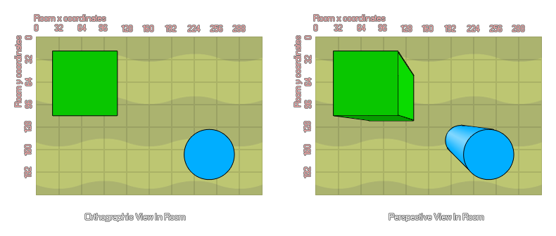

d3d_set_projection_perspective
This function can be used to set an orthographic projection.
Syntax :
d3d_set_projection_perspective(x, y, w, h, angle)
| Argument | Description |
|---|---|
| x | The x coordinate in the room to look from. |
| y | The y coordinate in the room to look from. |
| w | The width of the projection. |
| h | The height of the projection. |
| angle | The rotation angle of the projection. |
Returns : N/A
Description
You can use this type of projection to create a "top down" view of your room, where all the elements are given perspective and depth (ie: the higher the depth, the smaller and further away they appear from the player).
See the image below to get an idea of the difference between orthographic and perspective views.

Example :
d3d_set_projection_perspective(0, 0, room_width, room_height, 0);
The above code sets up a basic 3D perspective projection.
Back : 3D Projections
Next : d3d_set_projection